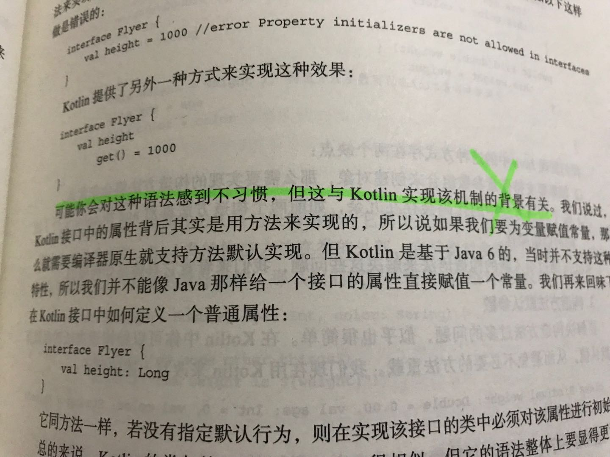

怎么实现我不管，这才是我要的最好的计算机语言！
王福强
今天把福川送的《Kotlin核心编程》扫完了，正好也想借这个机会，顺道聊聊自己对计算机语言的预期和喜好。
首先说说写这本书的作者团队，从书里的言辞和内容中也能看出，这个团队在Java，Scala和Kotlin生态里都有涉猎，应该是从Scala转Kotlin的，所以能够对ADT， Higher-Kinder Functions， Type Theory等理论都能够如数家珍，至于Actor-based Concurrency， 那当然更是今天Scala生态的Akka莫属了。
整本书虽然我读起来很顺，但我觉得不一定适合新手，如果你之前对Scala语言和生态有涉猎，那么，自然可以做到“曾经沧海难为水”了，因为很多Kotlin的语言特性跟Scala真的很像，甚至可以直接按照Scala的知觉写代码， 比如类型后置，比如String Interpolation， 比如val/var， 应该说， Kotlin胜在语言的设计初衷：兼容Java，实用主义， 这其实是Scala那帮SB社区Leaders永远赶不上的（虽然我一直是Scala粉儿，但我该骂还是要骂）， 但是， 理想是美好的， 现实是残酷的，从我的角度来看，Kotlin语言还是无法满足我对一门理想的计算机语言的预期， 因为现在很多的计算机语言设计者根本就没有把计算机语言当一个产品来做，一个好的产品首先就应该是简单，别搞那么多乌七八糟的语法和语法糖，别搞那么多乱七八糟的理论和tricky的技巧，写了tmd这么些年代码，你我都应该明白， 所有的奇技淫巧，都抵不过大巧若拙， 所有的语言争吵，都抵不过老子什么最熟就撸哪个。
Kotlin虽然有简单的一面，但我也看到了很多不那么简单一隅，data class X | annotation class X | enum class X | sealed class X, 这些我认为是好的设计，因为从语法到语义直觉上都是一致的，所以简单， 但像enum里面定义复杂逻辑， 语法糖一大堆， lazy/lateinit, companion object, extends针对interface和class不一致， pattern match更是二流角色，所有这些，我觉得都是值得诟病的， 诟病的背后就是：

如果一门计算机语音就是一个产品， 开发人员就是使用产品的人，对于使用产品的人来讲， Don’t Make Me Think才是直接诉求， 你跟我抱怨实现有限制， 实现背景有什么意义呢？ 换句话说，难道还是你自己对自己的产品和实现的把控能力不行吗？这其实跟公司里很多开发抱怨说产品经理抛给他们的永远是一句”怎么实现我不管”不是一个道理吗？ 从用户的角度来说，产品经理说的难道不对吗？ 怎么实现就是你研发的事情啊？
对一门计算机语音的设计者来说也是一个道理， 语言难用，学习曲线高，说到底都是你这个产品经理的问题， 要么是产品设计有问题，要么你团队的能力有问题，起码对问题域和编译器原理和工程都把控不足。
但话又说回来了， 现实其实就是这么不完美， 每一门语言就像每一个人一样，有好的一面，也有不好的一面， 当现实没法改变的时候，我们就得挑各个实体好的那些面来用：
- 语言上， Kotlin默认的String Interpolation, 默认的.java <-> .kotlin的转换等微小的细节都是用户体验很好的点儿，而Scala里则需要通过语法上或者类库上特定的明确指示才能达成；
- 架构上， 为什么我在《SpringBoot揭秘》1里讲得东西都很简单，基本上只是谈了SpringBoot的内核和一些简单的产品思路，因为我要传达的不是什么技术牛逼，而是说你能够在各个生态间游猎之后，对各个方案进行裁剪，使之能够以更低的成本(包含大多数人的认知成本)、更高的效率形成用户可用的产品， 这个才是牛逼的能力，技术你自己觉得多么精深没意义，形成产品，为用户创造价值才有意义。
- 用人上，尺有所短寸有所长，每个人都有优点和缺点， CTO可以写代码，但写代码绝对不是CTO的核心能力，为什么冯大辉在丁香园的经历会成为他自嘲的一个案例(就跟我自嘲自己是曾经的运维架构师一样)，因为CTO每个公司就那么一个， 大部分人是没做过甚至做不了CTO的，所以他们更愿意以自己的认知来评判CTO，殊不知自己其实跟田间地头说当了皇帝要搞两个金锄头的农民一样，《见识》很重要。 CTO的核心能力之一其实是识人用人，让每个人的优势发挥出来，把每个人”裁剪”后组织成一个有蓬勃的战斗力、有鲜明的技术文化、能够持续高效的支撑公司产品和业务发展的技术团队， 这才是CTO的硬核。
我们需要精英，但我们不需要伪精英，真正的精英是能够通过机制、手段和教育将大多数非经营的人组织起来成事，即那种”料民力则无事不成”的人，而不是那些高举精深的概念和不实用的复杂技术吹嘘炫耀的人， 从语言的设计者群体来讲， Scala就属于后者，Golang/Kotlin显然更追求实用和拿结果。
Keep It Simple, Stupid, easier said than done！
https://book.douban.com/subject/26808298/， 当然，书的评分不高我也理解为什么，因为国内就这么个生态, -_-’， 所以那些喜爱我的读者们我谢谢你们，但我不会再写什么技术书了…↩︎


开天窗，拉认知，订阅「福报」，即刻拥有自己的全模态人工智能。